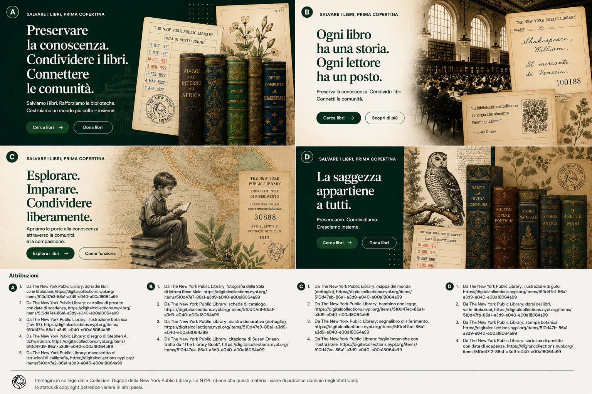

Gli esempi istituzionali in questa pagina servono solo come rappresentazione concettuale del flusso di lavoro e non implicano partnership o implementazioni esistenti.
Guida per istituzioni
Esamina le offerte di libri con sufficiente struttura per decisioni reali.
Let Books è pensato per processi favorevoli alle biblioteche, ma anche per scuole, università, archivi e associazioni che hanno bisogno di revisione pratica e coordinamento del ritiro.

Quando questa guida fa per te
- Esamini libri che i donatori offrono.
- Ti serve una selezione strutturata invece di email informali.
- Vuoi legare le decisioni a identificatori stabili.
- Ti interessano origine dei dati, stato e fattibilità del ritiro.
Chi può essere un'istituzione
- Biblioteche pubbliche e accademiche
- Scuole e università
- Archivi e collezioni specializzate
- Associazioni e altre organizzazioni partner
Processo base di revisione
Il processo MVP è volutamente semplice perché molte istituzioni accetteranno prima un foglio di calcolo che un nuovo portale.
Ricevi l'esportazione
Apri una lista con ID stabili e metadati leggibili.
Segna le decisioni
Scegli desiderato, forse o non desiderato e aggiungi un commento se necessario.
Restituisci il file
Usa un flusso noto senza obbligo di un nuovo account.
Importa le decisioni
Il donatore recupera le tue decisioni senza associazioni ambigue per titolo.
Crea la lista di ritiro
Le copie richieste vengono raggruppate per posizioni reali.
Coordina la consegna
Ritiro e consegna restano fuori dalla piattaforma finché funzioni future non lo estendono esplicitamente.
Perché la provenienza dei dati è importante
Le istituzioni devono sapere se un dato proviene da una persona, da OCR, da un catalogo esterno o da un'importazione. Fiducia e stato di revisione devono essere visibili.
La logistica fisica decide ancora
Una copia richiesta è utile solo quando qualcuno può trovarla. La lista di ritiro per stanza, scaffale e scatola lo rende pratico.
Esempio: Una biblioteca civica, un dipartimento universitario e un archivio locale esaminano un'unica esportazione di un donatore privato e ciascuno seleziona copie diverse in base a stato e pertinenza dei contenuti.